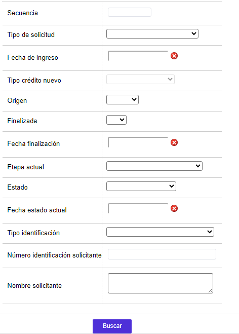
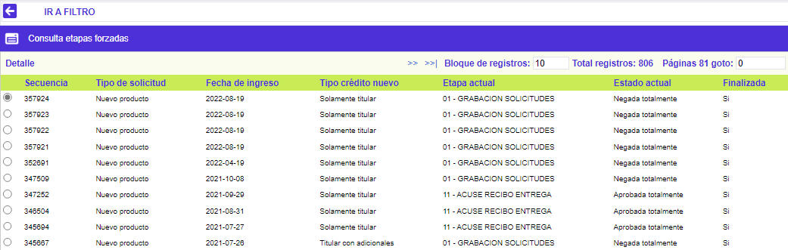
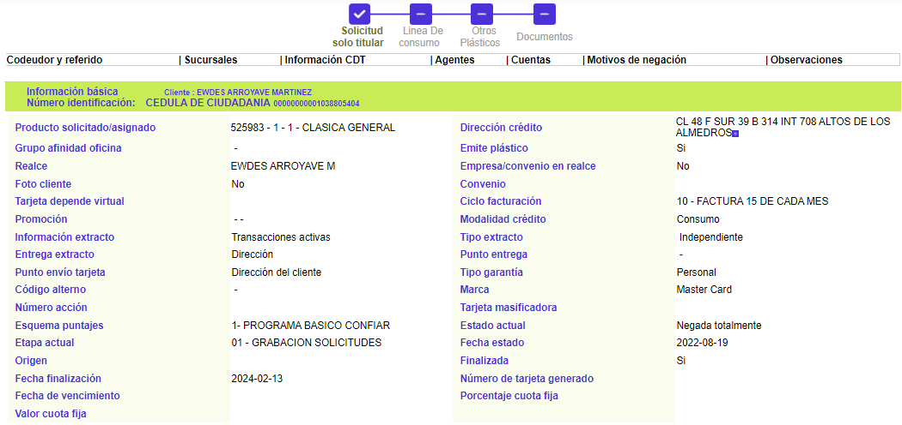

|
Consulta etapas forzadas |
Mediante esta función se posibilita la consulta de las solicitudes que han ingresado al sistema, sobre las cuales se ha aplicado forzadamente alguna de las etapas previamente definidas en los parámetros del módulo.
El formulario cuenta con un filtro de búsqueda y la opción Solicitudes en la parte superior.
Filtro: Se pueden realizar consultas a través de las siguientes opciones:

|
Secuencia |
Aparece el número consecutivo que identifica a cada una de las solicitudes que se han realizado en el sistema. |
|
Origen |
Permite identificar a través de cuál fuente ingresó la solicitud. Permite realizar consultas por los distintos orígenes mediante la lista de valores adjunta. |
|
Tipo solicitud |
Campo que ilustra la clase de solicitud que ha realizado el cliente; además posee lista de valores la cual puede ser utilizada como criterio para realizar consultas por los distintos tipos o clases de solicitudes. |
|
Tipo crédito nuevo |
Campo que indica si la solicitud tiene otras solicitudes relacionadas en trámite o no. Permite realizar consultas por cada tipo de crédito nuevo mediante la lista de valores adjunta. |
|
Fecha ingreso |
Corresponde a la fecha en la cual la solicitud ingresó a la última etapa en la cual se encuentra la solicitud. Si se requiere establecer la fecha en que ingresó la solicitud basta con presionar el botón especial de Consultar Etapas. |
|
Fecha finalización |
Campo en el que en formato YYYY-MM-DD ilustra la fecha en que efectivamente se surtió la última etapa parametrizada. |
|
Etapa actual |
Muestra la etapa del proceso en la cual se encuentra la solicitud cuando esta no está finalizada. |
|
Finalizada |
Campo que posee lista de valores que además de servir de criterio de consulta, indica si la solicitud ya finalizó o no, o aún hace transito por alguna de las etapas parametrizadas. Contiene la opción Nulo. |
|
Estado |
Campo que indica la condición en que se encuentra la solicitud al arribar a esta etapa, las cuales pueden ser: En zona gris, Negada totalmente, Negada parcialmente, Aprobada totalmente o Aprobada parcialmente; de igual forma facilita la consulta por cualquiera de estas mediante la lista de valores adjunta. |
|
Fecha estado |
Campo que ilustra la fecha en la que la solicitud adquirió el estado actual. |
|
Tipo identificación |
Campo que despliega tanto el tipo de documento como el número del mismo, que identifica al solicitante. |
|
Número identificación |
Campo que despliega tanto el tipo de documento como el número del mismo, que identifica al solicitante. |
|
Nombre |
Despliega el nombre del cliente solicitante. |
El sistema muestra el siguiente formulario de acuerdo a los datos ingresados en el filtro. Este formulario cuenta con la opción Detalle.

Detalle: Este formulario muestra la siguiente información:
